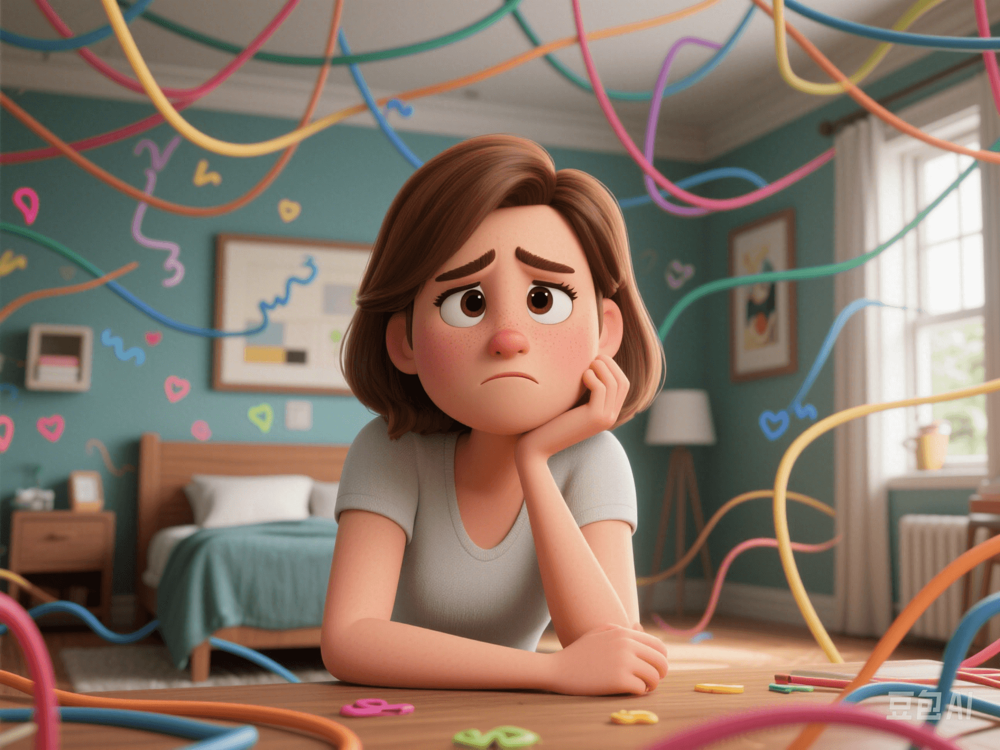

A Comprehensive Guide to Women's Psychological and Emotional Health
PeaceLove.Top Insights :2025-04-13
From being overwhelmed by stress to achieving emotional stability, you can take better care of yourself more gently! In the fast - paced and high - expectation modern life, women face challenges from multiple identities: daughter, mother, partner, and career elite... 🌪️ This "always - on" state can easily trigger psychological and emotional fluctuations. Data shows that women are more likely than men to experience problems such as anxiety, depression, and emotional dysregulation. Therefore, it is especially important to understand and care for your own mental health. 🌷
🧠 Why Are Women More Prone to Emotional Imbalances?
1️⃣ The Impact of Hormonal Fluctuations
During puberty, menstruation, pregnancy, and menopause, the levels of estrogen and progesterone in women's bodies fluctuate greatly, directly affecting the levels of mood - regulating substances such as serotonin and dopamine in the brain. This can easily lead to feelings of depression, irritability, and sensitivity.
2️⃣ The Pressure of Social Roles
"Be successful, be gentle, and don't break down." 🧳 Women are often given complex and contradictory expectations by society, which invisibly increases their psychological burden.
3️⃣ Higher Empathy
Women tend to have stronger emotional resonance abilities. 💓 While this is an advantage, it also makes them more likely to absorb external emotional garbage, leading to internal exhaustion over time.
🌈 Three Steps to Emotional Management to Stop the Mental "Rat - Race"
📌 Step 1: Notice Your Emotions
Many times, we feel "annoyed" or "confused" but can't say exactly what's wrong. Learning to describe your emotions in words is the first step in self - healing:
- 🧩 "I feel anxious because I have too much work and I'm worried I won't do it well."
- 🧩 "I'm very frustrated because I wasn't understood."
Tip: Write an emotion diary every day, recording your current feelings and the reasons with keywords to develop self - awareness.
📌 Step 2: Cope with Stress Scientifically
Life can't be without stress, but we can choose not to be crushed by it! Here are some effective ways to relieve stress:
- 💃 Get moving: Exercises such as yoga, brisk walking, and HIIT can release endorphins and naturally improve your mood.
- 🎧 Listen to healing music: Soft music, natural sound effects, and breathing guides can all help to calm your emotions.
- 🌱 Connect with nature: Research shows that three hours of natural exposure (such as in forests or green spaces) per week can significantly relieve anxiety and stress.
📌 Step 3: Don't Be Afraid to Ask for Help ❤️🩹
Mental health is as important as physical health and deserves to be taken seriously. Modern women don't need to "shoulder everything alone"!
- 🧑⚕️ Psychological counseling: If you've been feeling depressed, irritable, having trouble sleeping, or losing interest in life for a long time, a professional psychologist can help you get out of the emotional quagmire.
- 👭 Talk and be accompanied: Chatting with close friends or supportive people is an important emotional regulation mechanism.
- ✨ Online mental support platforms: Such as JianDan XinLi and YiXinLi, which provide anonymous and safe emotional counseling services.
🌟 Bonus: A List of Self - Care Tips for Women's Emotions ✅
- ✅ Keep a regular schedule 🛌
- ✅ Don't overeat or diet 🍽️
- ✅ Take five - minute deep breaths every day 🌬️
- ✅ Have at least one "Me Time" for yourself each week ☕
- ✅ Stay away from "PUA - style" relationships 💔
- ✅ Don't suppress your emotions with "I should be strong" 💬
📊 Popular Keywords:
- 🔍 "Women's mental health"
- 🔍 "Emotional management skills"
- 🔍 "Women's stress coping"
- 🔍 "Recommended women's psychological counseling platforms"
💬 Conclusion: Your Emotions Don't Need an Apology, and Your Mental Health Deserves Attention
Every woman deserves to have a healthy, harmonious, and free mental state. You don't need to be strong all the time and always happy. Emotional fluctuations are part of life. Replace denial with acceptance and criticism with gentleness. From today on, say to your emotions:
🧸 "I see you. Thank you for reminding me that it's time to take a break."
💖 Take a deep breath for your mind and let your emotions have a spring. 🌸